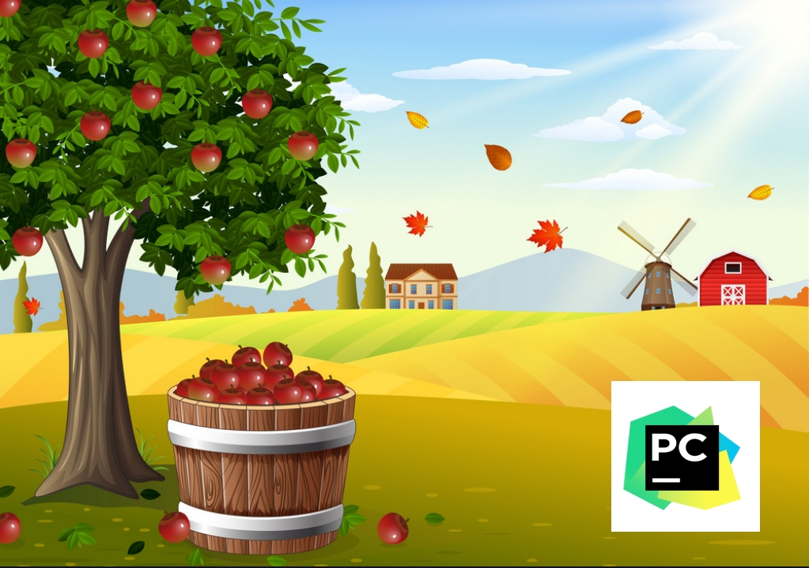

In my experience, data cleaning and prepping can take up the most time when doing data-analysis. For this project I used SQL to do the Data Cleaning.
This project was one I enjoyed a lot, so I hope you enjoy looking at it!
.
This pandemic brought a lot of new challenges and for Data Analyst it created an opportunity to process huge amounts of data that the world can look at. In this project I did some Data Exploration in SQL on real-time Covid data.
These projects are my Data Visualizations in Tableau. This is where it all comes together!
In this project I used 4 decades of movie data to look at the correlation of various movie factors in Python(Jupyter Notebook). The data can be used to consult production teams with their decisions in budgeting, marketing, etc.

This project is on Web Scraping. In this project I extracted weather information from Google Weather Services and then imported it into an excel file. The program is also automated, which means that new data will be added every hour that it is running.
As someone that loves puzzles and loves solving things that are difficult, I thought it would be interesting to create a solver that can find a solution to the most difficult sudoku puzzles in just a few seconds.

This game I created in Python was one of the first times I stepped out of my comfort-zone when it comes to programming. I was very new to game development but enjoyed making this very simple game.